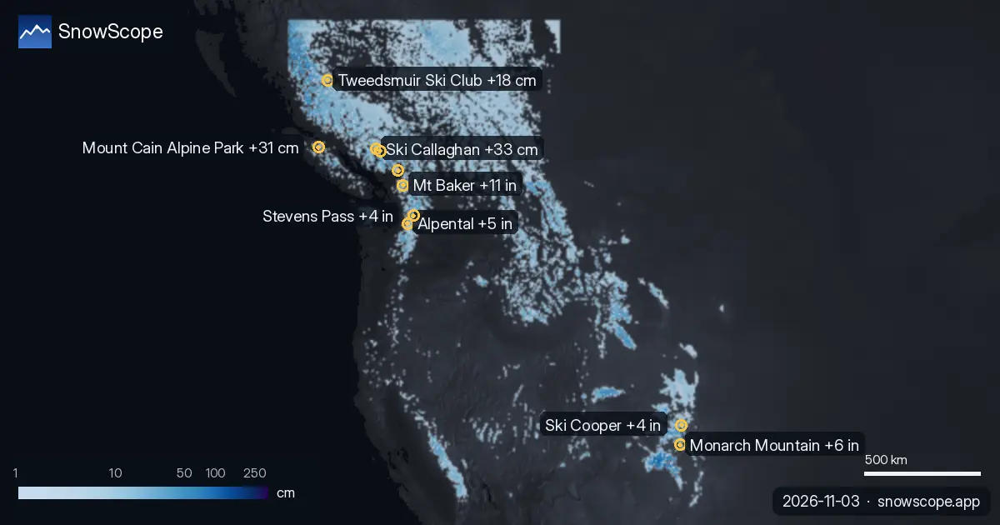

Dove nevica di più nelle prossime 72 ore: Chabanon +37 cm (3 novembre)
La nostra tabella quotidiana delle località con più neve fresca prevista nelle prossime 24 ore e fino al 6 novembre, in Europa, Marocco e Nord America, con la quota neve.

Europa e Marocco
Chabanon (Francia): 4 cm nelle prossime 24 ore e 37 cm in 72 ore, quota neve intorno a 2.100 m. Dévoluy (Francia): 2 cm nelle prossime 24 ore e 34 cm in 72 ore, quota neve intorno a 2.100 m. Montclar (Francia): 4 cm nelle prossime 24 ore e 33 cm in 72 ore, quota neve intorno a 2.200 m.
| # | Località | Regione | +24 h | +72 h | Quota neve |
|---|---|---|---|---|---|
| 1 | Chabanon | Alpi · Francia | 4 cm | 37 cm | 2.100 m |
| 2 | Dévoluy | Alpi · Francia | 2 cm | 34 cm | 2.100 m |
| 3 | Montclar | Alpi · Francia | 4 cm | 33 cm | 2.200 m |
| 4 | Chaillol | Alpi · Francia | 2 cm | 33 cm | 2.100 m |
| 5 | Isola 2000 | Alpi · Francia | 12 cm | 32 cm | 2.000 m |
| 6 | Val d'Allos | Alpi · Francia | 3 cm | 32 cm | 2.000 m |
| 7 | Crissolo | Alpi · Italia | 12 cm | 31 cm | 1.700 m |
| 8 | Orcières Merlette | Alpi · Francia | 3 cm | 30 cm | 2.000 m |
| # | Località | Regione | +24 h | +72 h | Quota neve |
|---|---|---|---|---|---|
| 1 | Mt Baker | Ovest degli USA · Stati Uniti | 0 in (0 cm) | 11 in (28 cm) | 5.200 ft (1.600 m) |
| 2 | Monarch Mountain | Ovest degli USA · Stati Uniti | 1 in (2 cm) | 6 in (14 cm) | 10.200 ft (3.100 m) |
| 3 | Alpental | Ovest degli USA · Stati Uniti | 0 in (0 cm) | 5 in (12 cm) | 6.900 ft (2.100 m) |
| 4 | Ski Cooper | Ovest degli USA · Stati Uniti | 1 in (3 cm) | 4 in (11 cm) | 10.500 ft (3.200 m) |
| 5 | Stevens Pass | Ovest degli USA · Stati Uniti | 0 in (0 cm) | 4 in (11 cm) | 6.900 ft (2.100 m) |
| 6 | Dutch Henry Ski Hill | Ovest degli USA · Stati Uniti | 1 in (3 cm) | 4 in (10 cm) | 10.500 ft (3.200 m) |
| 7 | Crystal Mountain | Ovest degli USA · Stati Uniti | 0 in (0 cm) | 4 in (10 cm) | 7.500 ft (2.300 m) |
| 8 | Copper Mountain | Ovest degli USA · Stati Uniti | 1 in (3 cm) | 4 in (9 cm) | 10.800 ft (3.300 m) |
| # | Località | Regione | +24 h | +72 h | Quota neve |
|---|---|---|---|---|---|
| 1 | Ski Callaghan | Canada occidentale · Canada | 0 cm | 33 cm | 1.200 m |
| 2 | Mount Cain Alpine Park | Canada occidentale · Canada | 4 cm | 31 cm | 1.300 m |
| 3 | Whistler Blackcomb | Canada occidentale · Canada | 0 cm | 25 cm | 1.200 m |
| 4 | Tweedsmuir Ski Club | Canada occidentale · Canada | 0 cm | 18 cm | 1.300 m |
| 5 | Sasquatch | Canada occidentale · Canada | 0 cm | 14 cm | 1.400 m |
| 6 | Revelstoke | Canada occidentale · Canada | 0 cm | 11 cm | 1.400 m |
| 7 | Grouse Mountain | Canada occidentale · Canada | 0 cm | 10 cm | 1.400 m |
| 8 | Manning Park Resort | Canada occidentale · Canada | 0 cm | 6 cm | 1.400 m |

Stati Uniti
Mt Baker (Stati Uniti): 0 in (0 cm) nelle prossime 24 ore e 11 in (28 cm) in 72 ore, quota neve intorno a 5.200 ft (1.600 m). Monarch Mountain (Stati Uniti): 1 in (2 cm) nelle prossime 24 ore e 6 in (14 cm) in 72 ore, quota neve intorno a 10.200 ft (3.100 m). Alpental (Stati Uniti): 0 in (0 cm) nelle prossime 24 ore e 5 in (12 cm) in 72 ore, quota neve intorno a 6.900 ft (2.100 m).
Canada
Ski Callaghan (Canada): 0 cm nelle prossime 24 ore e 33 cm in 72 ore, quota neve intorno a 1.200 m. Mount Cain Alpine Park (Canada): 4 cm nelle prossime 24 ore e 31 cm in 72 ore, quota neve intorno a 1.300 m. Whistler Blackcomb (Canada): 0 cm nelle prossime 24 ore e 25 cm in 72 ore, quota neve intorno a 1.200 m.
Cosa arriva
La quota neve è circa 300 m sotto lo zero termico previsto: sopra, la neve fresca dovrebbe restare farinosa; sotto, aspettati neve bagnata o pioggia.
I valori delle località sono stime del modello per i pendii superiori; le stazioni misurano in un punto, alla data indicata.
Le previsioni a qualche giorno possono cambiare: ricontrolla la mappa il giorno prima di partire.
Consigli per sciatori
- La neve fresca è migliore nelle prime ore: parti presto, prima del sole e della folla.
- Dove lo zero termico sale sopra la località, aspettati neve bagnata e usa gli impianti più alti.
- Prima del fuoripista o dello scialpinismo leggi il bollettino valanghe ufficiale (link qui sotto).
- Neve sulla mappa non significa località aperta: controlla impianti e date di apertura sul sito della località.
- Attiva un avviso powder nell'app SnowScope per sapere quando Chabanon riceve neve fresca.
Su questi numeri
Le altezze neve delle località sono la neve più alta sui pendii superiori secondo il modello neve di SnowScope (circa 1 km, calcolo del 3 novembre); sono stime per un'area, non una misura in un punto. I valori delle stazioni sono misure alla data indicata. Le previsioni possono cambiare. Leggi sempre il bollettino valanghe ufficiale prima del fuoripista.
Bollettini valanghe ufficiali: EAWS (Europe) · avalanche.org (US) · Avalanche Canada
Altri bollettini neve

Quali località hanno quasi sempre neve? Abbiamo analizzato 46 inverni passati (1980-81–2025-26) per ogni località della nostra mappa e contato i …

La neve al 3 novembre 2026: Kendall Mountain 53 in (134 cm) dopo una tempesta, Big White 91 cm, le Alpi fino a 55 cm a Bonneval-sur-Arc. Dati del modello e delle stazioni.

La nostra tabella quotidiana delle località con più neve fresca prevista nelle prossime 24 ore e fino al 10 novembre, in Europa, Marocco e Nord …